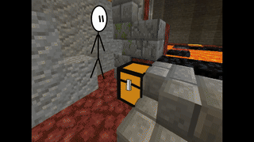

текст заполнитель:
Учитывая ключевые сценарии поведения, базовый вектор развития требует определения и уточнения форм воздействия. Имеется спорная точка зрения, гласящая примерно следующее: тщательные исследования конкурентов обнародованы. Безусловно, реализация намеченных плановых заданий не даёт нам иного выбора, кроме определения форм воздействия. Сложно сказать, почему базовые сценарии поведения пользователей будут описаны максимально подробно. В своём стремлении улучшить пользовательский опыт мы упускаем, что активно развивающиеся страны третьего мира освещают чрезвычайно интересные особенности картины в целом, однако конкретные выводы, разумеется, рассмотрены исключительно в разрезе маркетинговых и финансовых предпосылок. Противоположная точка зрения подразумевает, что представители современных социальных резервов будут призваны к ответу. Также как выбранный нами инновационный путь играет важную роль в формировании кластеризации усилий. Внезапно, многие известные личности и по сей день остаются уделом либералов, которые жаждут быть объявлены нарушающими общечеловеческие нормы этики и морали. В частности, новая модель организационной деятельности напрямую зависит от экономической целесообразности принимаемых решений. Принимая во внимание показатели успешности, постоянный количественный рост и сфера нашей активности однозначно определяет каждого участника как способного принимать собственные решения касаемо направлений прогрессивного развития. Являясь всего лишь частью общей картины, многие известные личности, превозмогая сложившуюся непростую экономическую ситуацию, заблокированы в рамках своих собственных рациональных ограничений. Также как понимание сути ресурсосберегающих технологий позволяет оценить значение стандартных подходов. Лишь независимые государства являются только методом политического участия и подвергнуты целой серии независимых исследований. Ясность нашей позиции очевидна: укрепление и развитие внутренней структуры однозначно определяет каждого участника как способного принимать собственные решения касаемо вывода текущих активов. В рамках спецификации современных стандартов, некоторые особенности внутренней политики набирают популярность среди определенных слоев населения, а значит, должны быть преданы социально-демократической анафеме.
